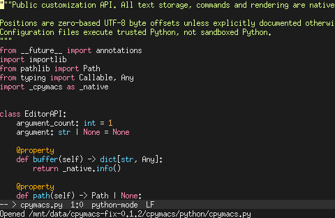

Terminal colours and PuTTY
A C-only, high-contrast terminal renderer that does not borrow your default or ANSI-16 palette.
Fix for the red, underlined screen
Version 0.1.2 removes the unsafe colour fallback introduced in 0.1.1. Automatic mode no longer sends RGB escape sequences. It sends only indexed colours for recognized terminals such as xterm and PuTTY. No theme or Python configuration changes are required. This applies to both the default theme and the cyberpunk profile; the GUI is unchanged.
./build/cpymacs --version
# cpymacs 0.1.2
./build/cpymacs --nox --tui-colors=auto --config examples/dotemacs.py python/cpymacs.pyThe explicit auto overrides any previous CPYMACS_TUI_COLORS=truecolor environment setting. Without that override, an explicitly configured RGB policy remains an intentional opt-in.
Root cause
The previous release sent a 256-colour pair followed by a semicolon-separated RGB pair, assuming an unsupported RGB extension would be ignored as a group. That assumption was wrong. In the PuTTY 0.70 SGR parser, extended-colour commands only consume subsequent parameters when the colour kind is 5 (indexed). For kind 2 (RGB), the remaining numbers are processed as independent attributes.
The default background is RGB 21,25,31. In that older parser, those values enable underlining, disable blinking, and select ANSI red. Thus ordinary text and blank-row padding become red and underlined. The initial 256-colour setting does not protect them from the following RGB suffix. The upstream true-colour record identifies support as arriving in PuTTY 0.71. The user's exact client version was not established; the old parsing behavior reproduces the reported failure.
The 0.1.1 test model also made the wrong assumption: disabling RGB in a modern parser is not equivalent to using an older parser that does not recognize the grammar. The new regression keeps these cases separate and includes actual bytes captured from the old executable.
Rendering policy
AUTO is now conservative, not a capability probe. Recognized TERM names select 256 colours; unknown names select monochrome. A COLORTERM hint never promotes AUTO to RGB. No palette rewriting, terminal queries or network round trips are introduced. Each colour mode emits one colour grammar only.
Every face resets SGR attributes before setting its foreground/background pair. No terminal face requests underline, double underline, bold, dim or blinking text. Normal text and padding stay plain; selection and mode lines use their background colours and reverse-video fallback. Monochrome also avoids underlining syntax. The pale-yellow software block cursor remains independent of the client cursor palette.
Indexed colours use slots 16 through 255, not the configurable basic 16 colours. Computed sRGB contrast is checked at 7:1 or better for both RGB and indexed text/background pairs, including comments and mode lines. Palette calculations remain cached in native C. Actual readability can still depend on fonts, displays and client overrides; a colour-value test is not a physical-display guarantee.
Options
| Option | Behavior |
|---|---|
--tui-colors=auto | Default. Recognized TERM names, including xterm, putty, screen and tmux, use indexed colours only. Unknown, dumb and Linux-console TERM values use monochrome. COLORTERM does not enable RGB. |
--tui-colors=256 | Force indexed slots 16-255 regardless of TERM. Does not send RGB. |
--tui-colors=truecolor | Force RGB only. Use only with a confirmed RGB-compatible terminal path. Not suitable for legacy PuTTY. |
--tui-colors=mono | No colour commands. Plain default-colour text, with reverse video for selection, mode lines and the block cursor. No underline. |
--tui-cursor=block | Default. Paint the software block cursor and hide the native cursor while editing. |
--tui-cursor=terminal | Use the terminal's native cursor; its appearance is controlled by the client. |
Both --option=value and --option value work. Explicit terminal options imply --nox, even with DISPLAY set. Environment defaults are CPYMACS_TUI_COLORS and CPYMACS_TUI_CURSOR; command-line values take priority. These options are frontend-local, work with --connect, and do not change a shared backend's theme. They are rejected with --batch or --server.
Real terminal captures


Limits
Changing PuTTY's default/basic colours is different from refusing application colour commands. The PuTTY colour settings documentation describes separate acceptance controls. AUTO requires indexed-colour handling; it does not silently try RGB when indexed colour is disabled. Use monochrome with readable defaults, or explicitly select RGB on a known-compatible client. No remote renderer can override a client refusing all colour changes while using identical foreground and background defaults.
No Windows PuTTY executable was run for this release. Tests cover an explicit legacy parser model, modern extension switches, real PTY editing, and actual XTerm rendering. They are not an exhaustive check of every PuTTY fork, multiplexer, accessibility override or physical screen. The verification record distinguishes those checks.